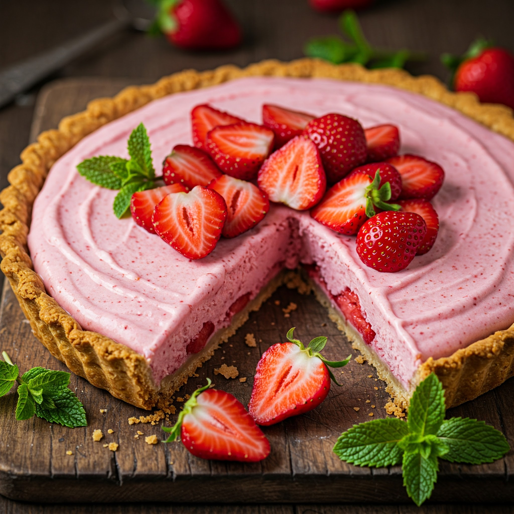
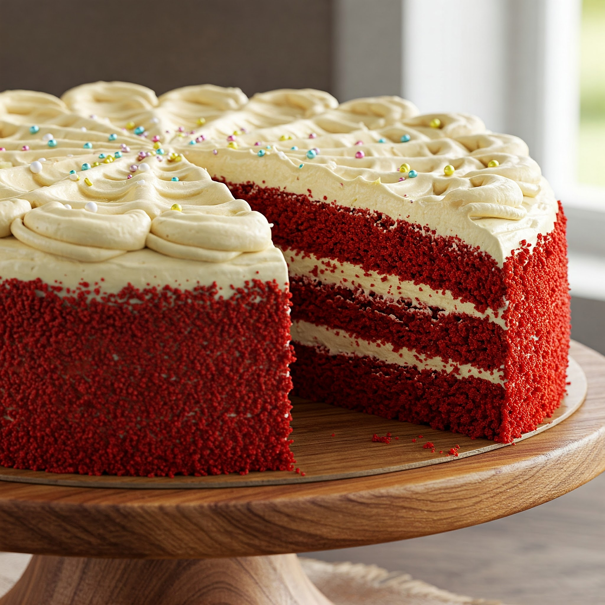
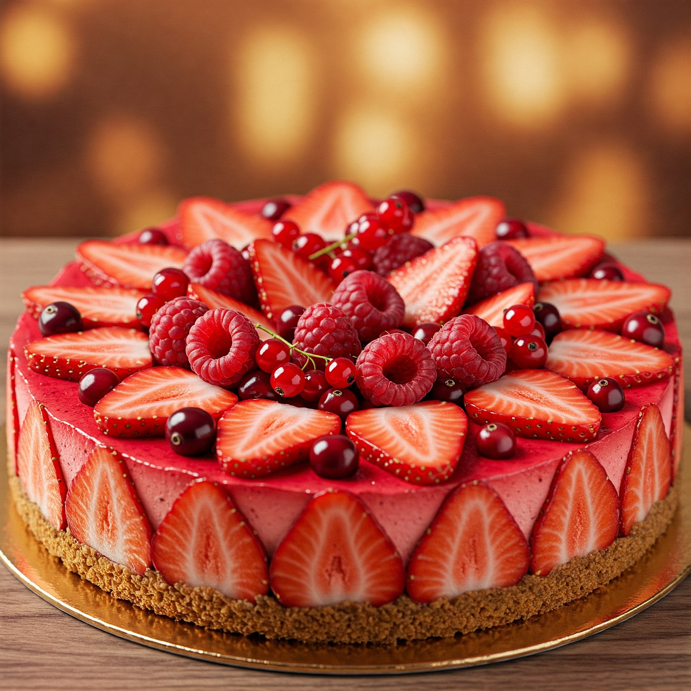
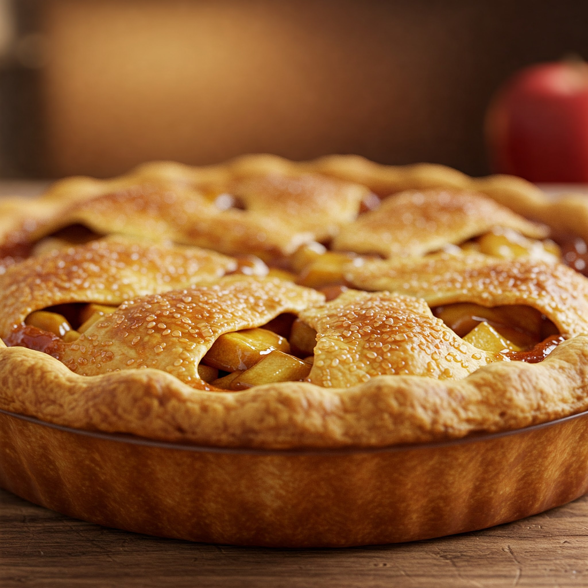

Ranking: melhores doces classificados de cada ano
Melhor doce de 2021:

Torta Gelada de Morango
Clique no card e saiba o porque esse doce foi o queridinho de todos em 2021!
Melhor doce de 2022:

Bolo Red Velvet com Cream Cheese
Clique no card e saiba o porque esse doce foi o queridinho de todos em 2022!
Melhor doce de 2023:

Cheesecake de frutas vermelhas
Clique no card e saiba o porque esse doce foi o queridinho de todos em 2023!
Melhor doce de 2024:

Torta de maçã caramelizada
Clique no card e saiba o porque esse doce foi o queridinho de todos em 2024!